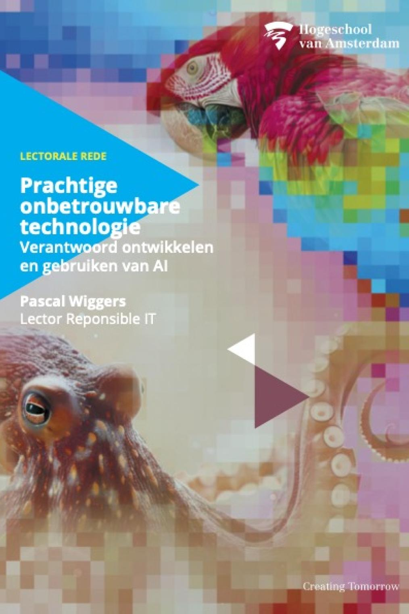

Over responsible IT
Het lectoraat Responsible IT richt zich samen met de Gemeente Amsterdam op de ontwikkeling van digitale technologie, met oog voor de maatschappelijke waarde en de menselijke maat. Toenemende digitalisering biedt kansen, maar legt ook druk op de samenleving.
Het lectoraat Responsible IT richt zich samen met de Gemeente Amsterdam op de ontwikkeling van digitale technologie, met oog voor de maatschappelijke waarde en de menselijke maat. Toenemende digitalisering biedt kansen, maar legt ook druk op de samenleving.
In de gemeente spelen tal van vraagstukken waaraan digitale technologie kan bijdragen, bijvoorbeeld op het gebied van leefbaarheid, gezondheid, onderwijs en mobiliteit. Het is hierbij van belang technologie zo te ontwikkelen, dat deze bijvoorbeeld privacy en autonomie waarborgt en niemand buitensluit. Een verantwoorde inzet en ontwikkeling van digitale technologie is voor de stad van cruciaal belang. Tegelijkertijd vormt de stad voor het lectoraat een belangrijk platform voor innovatie in direct contact met de inwoners.
We bevragen digitale technologie en ontwikkelen richtlijnen en gereedschappen om digitale technologie vanuit maatschappelijke waarden zoals autonomie, inclusie, diversiteit, non-discriminatie en duurzaamheid vorm te geven. Dit doen we in de praktijk aan hand van concrete vraagstukken, in nauwe samenwerking met burgers, programmeurs, ontwerpers, activisten, professionals, ambtenaren, studenten en docenten.
Wij werken met drie onderzoekslijnen
1. Verantwoorde digitale technologie: we onderzoeken hoe we digitale technologie expliciet vanuit maatschappelijke waarden kunnen ontwerpen en ontwikkelen door te digitale technologie te maken.
2. Gereedschappen voor verantwoord ontwerpen, ontwikkelen en gebruiken van technologie: we onderzoeken hoe we makers en gebruikers van digitale technologie handvatten kunnen bieden voor vormgeven van verantwoorde technologie en het verantwoord gebruiken van technologie.
3. Duiding en demystificatie van digitale technologie: binnen deze lijn vallen activiteiten waarin het lectoraat onderzoekt wat de effecten van het gebruik van technologie zijn.
Responsible AI Lab
Binnen het lectoraat Responsible IT richt het Responsible AI Lab zich specifiek op het vormgeven en gebruiken van verantwoorde AI binnen de creatieve sector en ICT.
Samenwerkingspartners
Doelgroepen van het lectoraat Responsible IT zijn studenten, docenten en professionals op het gebied van ontwerp, data-analyse, ICT en ethiek en de inwoners van de Metropoolregio Amsterdam.

Lectorale rede Pascal Wiggers
Op donderdag 30 oktober 2025 houdt Pascal Wiggers zijn lectorale rede. Pascal is sinds april 2024 Lector Responsible IT aan de Hogeschool van Amsterdam. Voorafgaand aan de rede organiseren we een interactieve rondetafelsessie over de rol van AI in de samenleving. De lectorale rede vindt plaats in de Gerard van Haarlemzaal in het Jakoba Mulderhuis (JMH) en is ook via een livestream te volgen. De link naar de livestream wordt een week van tevoren op de website geplaatst.
Meer informatie